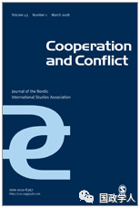
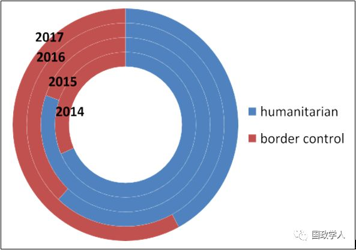
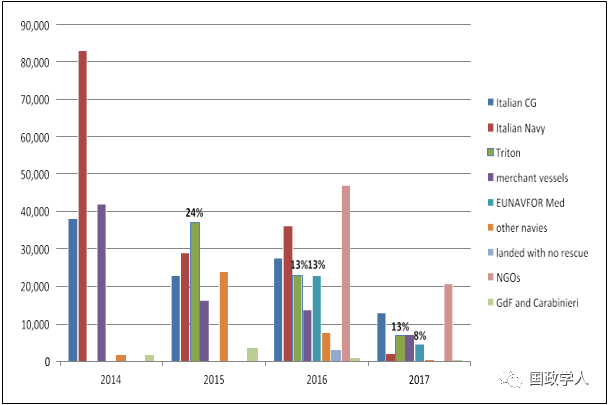
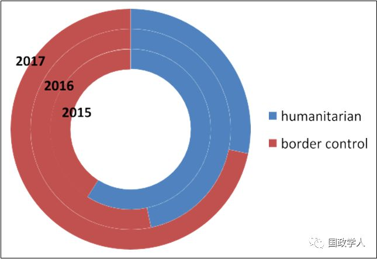

收录于合集

简 介
【作者】 Eugenio Cusumano是莱顿大学国际关系和欧盟研究室的助理教授。他的研究主要集中在军事组织和非国家行为体参与陆地和海上危机管理领域，重点是私营军事和安保公司（PMSCs）和非政府组织（NGOs）的活动。他的作品已发表在领先的国际关系和安全研究期刊如《战略研究期刊》《武装部队与社会》《国际关系和地中海政治》上，并经常被国际媒体引用。
【编译】 朱文菡
** 【校对】** 刘孝玉 晋玉
** ** 【审核】**** 丁伟航
** 【 来源 】**
https://doi.org/10.1177/0010836718780175；Cooperation and Conflict 2019, Vol. 54(1) 3–24；
** 【 ** ** 期刊** 】****《合作与冲突》创刊五十多年，致力于发表高质量的文章，相信学术多元化，因此不代表任何具体的方法、传统或学派。该期刊的使命是发表理论上可靠的、经验丰富的，方法论严谨的作品，并通过理论、概念和方法的创新推动该学科的最新发展。该刊有发表北欧和欧洲事务作品的传统。

** 组织化伪善的移民救援：介于人道主义与边境管制之间的欧盟在利比亚近海的海上行动**
Migrant rescue as organized hypocrisy: EU maritime missions offshore Libyabetween humanitarianism and border control
内容提要
2014 年 11 月， ****欧盟边境管理局（ Frontex ） ****开始展开其南地中海边境监测行动 即特里顿（ Triton ）行动（以下简称 “ 特里顿行动 ” ）。随后于 2015 年 6 月欧盟又展开了共同安全和防务政策反偷渡行动即欧盟地中海海军部队（ EUNAVFOR Med ） 索菲亚（ Sophia ）行动 （以下简称 “ 索菲亚行动 ” ）。 ****这两项行动的对外发言都强调海上搜救工作。 ****然而，这一承诺与其实际作为并不完全一致。 ****特里顿行动和索菲亚行动都优先考虑边境管制和反偷渡任务，只进行了相对有限的搜救行动。 ****本文将欧盟的人道主义言论与主要侧重于遏制非正常移民的行为之间的差距解释为一种组织化伪善（ organized hypocrisy ）的形式。 ****这种言论和行为的脱钩，使得特里顿行动和索菲亚行动能够调和两种相互冲突的期望 —— 欧洲各国政府一方面希望减少移民抵达欧洲，另一方面又期待通过规范性命令（ normative imperative ）减少海上生命损失。但欧盟行动的组织化伪善仍存在几个对利比亚近海岸人道主义危机开展有效管理的阻碍因素。
正文
**1
** 导 论
据国际移民组织和难民署数据统计，2014年1月至2017年11月期间，至少有13000名移民在试图抵达意大利时在海上遇难，使得欧洲的南部海上边界成为世界上最致命的边界。基于安全关切和人道危机，欧洲各国和欧盟（EU）着手处理南地中海大规模移民问题。 2013年10月，为应对海上的几起悲剧，意大利海军启动了名为Mare Nostrum（拉丁语，意指我们的海）的大型搜索和救援（SAR, 以下简称搜救）行动。 2014年11月，在此次行动中断后，欧盟边境管理局（现为欧洲边境和海岸警卫队）启动了边境监测特里顿行动。 2015年6月，作为特里顿行动的补充，共同安全和防务政策（CSDP）军事行动即欧盟地中海海军部队索菲亚行动拉开了序幕，该行动旨在通过扰乱偷渡网络打击非法移民。
现有的学术研究强烈批评这些行动蒙上了人道主义遮羞布，实际是为了遏制非法入境并加强对欧盟海上边界的控制；但特里顿行动和索菲亚行动的公共传播战略和运作都缺乏系统的检验、比较和解释。 欧盟海上行动如何寻求调和边境管制任务和人道主义要求共存所产生的矛盾？ 特里顿行动和索菲亚行动对外发言都强调海上搜救工作。 然而，这两项行动没有充分反映出这种救助移民的承诺。面临这样的矛盾要求时，各组织经常通过言论和行为的脱钩来应对这些冲突压力。对于负责执行欧盟外部政策的机构来说尤其如此，它们经受着介于欧盟成为“世界上善的力量”的规范性承诺和欧盟成员国的多种实质利益之间的不易之共存（uneasy coexistence）。
本文结构化地、目标明确地比较从开始到2017年6月期间特里顿行动和索菲亚行动的言论和行为，在欧盟外部行动研究中 引入了组织化伪善的概念 。这些行动不仅仅对研究欧盟应对海上移民具有内在重要性；由于移民问题的高度政治意义和日益增加的安全意义、欧盟各成员国采取的各不相同的立场以及海上死亡事件的高度媒体显着性，也使得特里顿行动和索菲亚行动成为了解组织化伪善在欧盟对外关系中作用的理想来源。
本文的研究方法有三：一是通过对新闻稿和公众参与档案与泄露的机密文件进行比对，检验两项行动的对外发言与其内部话语之间的差异。二是通过从 意大利海上救援协调中心（ MRCC ，该中心跟踪在此期间进行的所有搜救行动）获得的获救移民数据来说明言论和行动之间的不匹配。三是对来自索菲亚行动、欧盟边境管理局、意大利海岸警卫队和非政府组织的 18 名工作人员进行了匿名的半结构式访谈。此外，本文还有赖于作者参加的在 2016 年至 2017 年期间由索菲亚行动组织的利益相关者会议以及 2016 年 8 月非政府组织两周的实地考察期间直接观察的利比亚海上搜救行动。
本文采取以上多种方法分析，以实现以下两个目标：一是通过调查欧盟海上行动在危机管理中所起的作用推动对跨地中海移民的研究。 二是通过将海上救援概念化为一种国际规范，并将组织化伪善作为欧盟机构如何平衡不相容规范和利益共存所产生的矛盾期望解释的来源，对海事安全和欧洲研究做出了理论贡献。 此外，本文还通过展示内容分析在系统地映射组织对主流规范的言论遵守与其实际行为之间的差距的实用性，推动组织化伪善研究。
本文分为以下几个部分： 第一部分介绍了组织化伪善概念，解释了其在欧盟对外关系中的用处，并引入了定量内容分析法（ quantitative content analysis ）作为衡量言论与行动之间不匹配的新工具。第二部分考察了特里顿行动和索菲亚行动，比较了每个行动的言论和行为。最后揭示了本研究的理论和政策含义，概述了未来研究的途径。
2
** ** 组织化伪善和欧盟对外关系
2.1 在国际关系中的组织化伪善
由于拥有不同要求和期望的“多个主体（multiple masters）”，并且作为一个庞大而复杂的官僚机构，公共关系和政策实施由不同的部门和个人进行，国际组织特别容易言行不一。斯蒂芬·克拉斯纳（Stephen Krasner, 1999）在国际关系中首次将组织化伪善用来审视主权制度，言论上大家通常对这一制度呈肯定态度，但实际上这一制度却遭到了国际体系中的强国系统性地侵犯。Michael Lipson（2007）通过强调联合国（UN）维和行动中言论与行动之间的差距，重新调整了对国际官僚机构的组织化伪善研究。 由于其合法性取决于能否反映其成员国的多样化偏好，因此联合国经常被期望同时维护相互矛盾的目标 。 例如，联合国应该通过发起维和行动来应对大规模侵犯人权事件的目标不可避免地与国家主权原则和成员国不愿维持有效的危机管理行动发生冲突。因此，组织化伪善在联合国维和行动中普遍存在。
2.2欧盟：一个伪善的角色
自克拉斯纳的开创性工作以来，组织化伪善概念一再被用于维和和世界银行等组织的行为。然而，欧洲研究很少提及这一概念。
构成欧盟的一系列官僚机构仍在努力调和欧盟成员国、欧盟机构和欧洲民间社会间的各种规范性承诺和物质利益的矛盾。协调这些相互冲突的偏好在欧盟对外关系领域尤其成问题。这至少有两个原因。首先，欧盟共同外交和安全政策（CFSP）与共同安全和防务政策（CSDP）是根据政府间方式制定的。未能获得所有理事会成员的批准可能会导致行动终止或导致由成员国自愿提供的人员和资产长期短缺。其次，欧盟的外部政策充满了强烈的规范期望。CFSP和CSDP在“保护人权” 和 “维护国际法 ”方面充满了强烈的道德承诺。一些学者指出，欧盟的外部行动受到言行不一、双重标准和不遵守规范性承诺的损害。因此，欧盟的外部行动经常被指责为“伪善”。
3
** ** 欧盟对中地中海地区移民的反应
欧盟全球战略将有效管理移民流量并使其符合欧洲价值观确定为欧盟外部政策的优先事项。欧盟在南地中海的海上行动面临来自外部环境的强大冲突压力。 一方面，特里顿行动和索菲亚行动是为应对频发的海上悲剧而生的，所以被赋予了拯救移民的法律和道义期待；另一方面，他们实际执行的任务又指向减少非法越过申根地区南部边界的行为。（编者注：即拯救移民的承诺与阻止移民入境的行为相冲突） 通过系统的检验表明，特里顿行动和索菲亚行动参与了相对较少的搜救行动，并开展了造成严重人道主义外部性的活动。
3.1 海上救援规范及其抑制因素
最值得注意的是，欧盟都柏林法规（ the EU Dublin Regulations ）要求移民在入境欧洲的第一个国家申请庇护。 ****这项海事法、难民法和欧盟法律产生的重叠义务给首次进入的国家带来了沉重的负担，阻碍了沿海国家开展救援任务。
3.2 特里顿行动
自2014年11月成立以来， 欧盟边境管理局的特里顿行动因其目的和运营行为的模糊性而被相互冲突的期望笼罩。
2013年10月，在几次广泛宣传的海上悲剧发生之后，意大利开始通过海军Mare Nostrum行动展开主动搜救，其中涉及34艘战舰和900名船员，并救出了150000 多名移民。意大利内阁随后由Enrico Letta担任主席，希望利用Mare Nostrum行动引领其他欧盟成员国参与，并利用即将召开的意大利欧洲理事会主席团会议获得欧盟范围内的支持。 然而， 其他成员国并没有支持意大利，甚至批评该行动刺激了非法越境 ，再加上希腊因缺乏欧盟分担难民负担而令人沮丧的情境，导致意大利海上行动终止。 2014年10月底，在Mare Nostrum行动终止后，欧盟边境管理局启动了特里顿行动。然而，特里顿行动未被赋予替代意大利海军行动所需的任务和资产。 与Mare Nostrum行动不同，特里顿行动主要是一个边境管制行动，最初在距意大利和马耳他海岸30海里的范围内运行，行动包括较少的船只，并仅有Mare Nostrum行动三分之一的预算。 随后利比亚近海搜救资源短缺导致更多的人溺水。
欧洲媒体往往认为欧盟边境管理局应对这些伤亡事件负责。学者和社会活动家们也认为，“因为他们决定撤销他们的搜救资源，因为他们制造致命的后果……欧盟机构对这些死亡负有很大责任”。这些指责在欧洲议会中得到了回应，议会批评了欧盟边境管理局并呼吁采取更加积极主动的搜救。2015年4月，联合外交和民政事务委员会将特里顿行动的预算增加了三倍，并将其业务范围扩大到意大利海岸以外最多138英里。 然而，该任务仍主要侧重于边境管制。
3.3 特里顿行动的言论
欧盟边境管理局网站上提供的关于特里顿行动的资料非常强调其参与搜救，并指出“搜索和救援仍然是该机构的优先事项”以及’加强其拯救海上生命的能力，欧盟大大增强了其海上行动”。描述其活动的视频进一步解释说，“意大利海上救援协调中心派遣最近或最有能力的船只来救援。”该网站上提供的情况说明书也解释说，“在很多情况下，欧盟边境管理局的船只和飞机也被意大利海岸警卫队重新定向，以帮助远离特里顿行动作战区域的遇难移民”。
通过对特里顿行动对外发言的定量内容分析，证实了这些摘录所强调的人道主义任务。如下图1所示，特里顿选择了强调人道主义承诺的言论。 “保存”“协助”和“帮助”等词语在特里顿行动的新闻稿和情况说明书中占有突出地位。最值得注意的是，名词和动词的“拯救”被重复148次。在整个检验区间，人道主义类别的词语比边境管制类别的词语高出67％至33％。

图 1 直至2017年6月特里顿行动的言论
3.4特里顿行动的实施方式
对特里顿行动进行考察展示了言论与行动之间存在的差距。与上节陈述相反，图2显示，特里顿行动在搜救中的参与率最高可达到2015年总救援量的24％，在2016年和2017年的前六个月却降至13％。

图 2 2014 年 1 月至 2017 年 6 月期间被救移民人数
有很多因素可以解释特里顿行动在2016年和2017年上半年的搜救份额萎缩。最值得注意的是，利比亚境外越来越多的非政府组织船只减轻了欧盟的部分救援任务负担。 然而，特里顿在搜救中的有限作用也受到任务选择的影响。正如事实报告间接承认的那样，欧盟边境管理局的搜救资源经常被“重新定向到他们的业务区域之外”，无法有系统地、积极地参与搜救。 这种行为部分归因于“搜救行动接近或关注在利比亚12英里的领海内……充当了蛇头的刺激因素，他们可以减少旅行费用并向易受影响的移民宣传救援行动使旅程更加安全，从而增加了移民对过境的需求”。
欧盟边境管理局的内部文件泄露给新闻界进一步表明其远离主动搜救的意图。在2014年底的第一阶段行动期间，行动负责人罗斯勒发出了一封保密信，要求意大利当局限制特里顿行动参与移民救援。该信批评了使用特里顿行动搜索通过电话发出SOS请求的船只，并指出“欧盟边境管理局认为一个卫星电话本身不是一起搜救事件”。即使在2015年4月特里顿行动的资产和任务扩大时，欧盟边境管理局还通过“故意巡逻错误区域并狡辩地解决困境”来自愿减少对搜救行动的参与。 自 2016 年底以来， ****欧盟边境管理局还指责非政府组织的救援是移民的刺激因素和人口走私的催化剂，引发了非政府救援行动的非法化进程，这已导致在利比亚近海岸救助移民的慈善机构刑事化风险不断增加。
3.5索菲亚行动
2015年4月，在兰佩杜萨海域发生800多人丧生的倾船事故后，联合外交和内政事务委员会决定以一项共同安全和防务政策（CSDP）军事任务补充特里顿行动。 虽然索菲亚行动是针对人道主义危机的恶化而发起的，但其主要设计为反偷渡行动，解决欧盟移民行动计划的第二点。因此，为索菲亚行动制定的核心任务是“作出系统的努力，以识别、捕获和处置移民偷运者或贩运者使用的船只，以促进欧盟更广泛地破坏人口走私的商业模式……并防止海上生命的进一步丧失。”
3.6 索菲亚行动的言论
尽管拯救海上生命只是在索菲亚行动的任务中间接提到，但该行动的对外发言始终强调行动的人道主义方面，旨在“通过减少偷渡来拯救生命”。作为一项人道主义行动的品牌重塑，“索菲亚”得名于一次海上行动获救的索马里婴儿。

图 3. 直至 2017 年 6 月索菲亚行动的言论
**
**
定量内容分析表明， 索菲亚行动也选择了强调人道主义任务的言论。 因此，行动的新闻稿用名词和动词如“救援”（194次）和“保存”（122次）传播。 特别是2015年，索菲亚行动的言论重点关注人道主义任务。 如图3所示，由于任务被重新分配，2016年和2017年对边境控制的重视程度有所提高。 然而，在整个检验区间，人道主义类别的词语（52％）几乎与安全任务相关的词语（48%）相重复。
3.7 索菲亚行动的实施方式
索菲亚行动船只部署在比特里顿行动更远的南部。然而，由于其资产是军舰，因此出于安全原因对其位置进行了划分。因此，索菲亚行动的船只对意大利海上救援协调中心的定位系统是不可见的。正如意大利海岸警卫队官员所承认的，这不可避免地减少了索菲亚行动对搜救的参与。根据海事非政府组织活动人士的说法，不披露他们的定位使得索菲亚行动船只得以靠近移民船只而远离救援行动。
公民组织StateWatch披露的一份保密的欧盟对外行动署（EEAS）报告清楚地说明了索菲亚行动参与相对较少的救援工作的意识。在这份报告中，该行动的指挥官海军上将 Credentino 表示 “通过我们资产获救的人数仅占总数的13％”。为避免可能的批评，Credentino 强调说，相对较少的救援工作不会被视为偷渡刺激因素的决定性因子，实际上，由于该地区的海上交通，无论索菲亚行动的存在与否，这些救援都将发生。与索菲亚行动的对外发言形成鲜明对比的是，这份给欧洲议会的机密报告故意淡化了索菲亚行动参与救援行动的情况。
索菲亚行动不仅只在有限的范围内参与搜救，正如英国上议院报告以及后来学者们所证实的那样，索菲亚行动对船只的破坏导致蛇头使用越来越不适合和超负荷的小艇。 上述机密报告还强调，索菲亚行动强迫蛇头采用一种新的作案手法，即 “ 由没有引擎的小船拖着橡皮艇，然后将其搁浅 ” 。 移民在没有引擎的小艇上漂流显然面临更高的风险，但报告对打击蛇头可能导致意外的人道主义后果保持沉默。此外，社会活动人士认为，索菲亚行动开展的附属任务之一，即利比亚海岸警卫队和海军的训练，也带来了严重的人道主义外部性。利比亚海岸警卫队主要侧重于移民拦截而不是搜救，一再阻碍非政府组织的救援行动，并对移民使用暴力行为，目前正在接受国际刑事法院（ICC）的调查。
组织化伪善可以被理解为试图调和这些不一致的要求。在履行其打击偷渡的核心任务的同时表现出遵守法律和道德责任的必要性导致欧盟的言论和行动明显脱钩。这种对人道主义活动的言论强调与边境管制任务的业务优先次序形成鲜明对比，实际上这可能造成严重的人道主义外部性。
**
**
**4
** 分析
总之，拯救移民的承诺与这两项行动在实施过程中的实际做法明显不符。 2014 年至 2017 年中期，特里顿行动和索菲亚行动挽救了近 12 万名移民，这并非微不足道。虽然两项行动使用的大多数船只并非主要用于海上救援，但它们仍然是大型快速的船只，可以依靠空中支援，并由大量的专业船员操控。尽管如此，这两项行动总共挽救的移民数量也远低于非政府组织，后者通常依靠志愿者在小型缓慢的改造渔船上操作。即使与海军军事行动如 Mare Nostrum 行动相比，特里顿行动和索菲亚行动对搜救的贡献也略显逊色。 Mare Nostrum 行动尽管一年即告终止，却救出了超过 15 万人，比特里顿行动和索菲亚行动在更长的时间内总共拯救的移民人数还多 3 万。此外，特里顿行动和索菲亚行动的对外发言以及泄露的内部文件之间存在明显的差异，突出了两项行动对搜救的有限参与。正如针对组织化伪善的学术研究所预计的那样，对这两项行动施加的相互冲突的要求导致了其言论和行动的脱钩。
组织化伪善在欧洲研究中的附加价值（ added value ）是什么？欧盟未能遵守其规范性承诺，长期以来被解释为是因为能力与期望间的差距太大。然而，特里顿行动和索菲亚行动所面临的主要问题，除了欧盟可用的工具和资源与预期实现的目标之间的不匹配，更重要的是其规范性期望与其安全利益相互冲突。这些不同的期望阻碍了其成员国的认同，从而产生了共识与期望的差距。不过，无论是能力与期望的差距还是共识与期望的差距，都不能解释其对外发言与行动之间的不匹配。正是由于成员国之间缺乏共识而无法完全执行的行动，使欧盟处于自身制造的困境之中，扩大了欧盟外部行动预期实现的目标与实际可实现的目标之间的差距。
为什么欧盟的官僚机构会采取可能最终会对欧盟外部行动的可信度起反作用的沟通策略？这不仅仅是由于欧盟存续的合法性并不建立在规范性承诺之上这一事实。有时候，正如组织化伪善学术研究所说的那样，这些承诺可能会通过不断重复来掩盖未与承诺一致的行动，从而既实现了对于解决问题的外部要求，又不必真正采取行动。
**
**
**5
** ** **启 示 ****
对于面临成员要求不一致的组织来说，言论与行动之间的脱钩是不可避免的。因为言行不一致通常是安抚多个主体的组织不可或缺的生存工具，组织化伪善是一种经验现象，不会引起个人层面对虚伪的道德谴责。在复杂的组织中，承诺者通常与行动者不同，完全协调言论和行动终究是不可能的。
组织化伪善往往会导致行动失败（ suboptimal outcomes）。首先，言行不一可能会造成承诺差距和道德风险。事实上，特里顿行动和索菲亚行动强调救援可能成为偷渡的刺激因素。如果“移民进行危险的偷渡，是因为他们知道有到达欧盟的人道主义援助”，那么将欧盟行动定位为救援行动的言论可能只会增大蛇头和移民的道德风险。观察Mare Nostrum行动结束后的时期可以发现，承诺差距的风险尤为明显。特里顿行动目标的模糊性和欧盟边境管理局的行动将取代Mare Nostrum行动进行主动搜救的这一错误信念，导致了救援资产短缺和海上伤亡人数急剧增加。其次，组织化伪善阻碍了对现有政策失败的客观评估，并推迟了对其的修订。第三，围绕每项行动目标的模糊性以及通过海上边境管制任务可以达到的程度导致了失败的行动记录。即使欧盟海上行动逮捕了许多偷渡嫌犯并处置了数百艘船只，这些活动也没有影响到2016年的偷渡数量。最后，虽然伪善可能会帮助欧盟安抚偏好不相容的成员国，但言论和行动脱钩仍会带来损害。如果被揭露，伪善可能会严重破坏组织的可信度。
_ ** _ 本文由国政学人微信平台独家编译首发**
更多阅读
【重磅速递】约瑟夫·奈：美国霸权的兴衰：从威尔逊到特朗普 | 国政学人
【重磅推荐】巴里·布赞：英国学派视角下的中国崛起 | 国政学人
【重磅速递】米尔斯海默：注定失败：自由主义国际秩序的兴衰 | 国政学人
【国际组织】IO杂志：联合国维和行动的武力运用问题研究 | 国政学人
【国际秩序】为什么自由主义国际秩序理念将美国外交政策引入歧途？| 国政学人
【关系理论】“关系”：世界政治关系理论的中国话语 | 国政学人
【百年国关】历史在国际社会中的应用：从巴黎和会到现在 | 国政学人
【英国学派】张勇进：中国与全球国际社会中的自由主义等级制：实力与对规范变迁的协商 | 国政学人
【地区秩序】论经济实力的可转化性：中国经济崛起与东亚安全秩序 | 国政学人
【中俄关系】不得已的伙伴：系统-单元动态与中俄关系 | 国政学人
【IPE研究】美国对外贸易政策的“1934年体制”是如何形成的？ | 国政学人
【现实主义】斯蒂芬·沃尔特：傲慢的终结与美国克制的新时代 | 国政学人
【理论批判】系统、层次与结构理论：沃尔兹的理论并非系统理论 | 国政学人
【外交政策】单极体系下的不和平状态与美国外交政策 | 国政学人
【欧洲研究】资本主义多样性与合规：加入欧盟后中东欧的经济改革 | 国政学人
【理论研究】吴建树：权力、道德、均势、联盟与摩根索——汉斯·摩根索的经典现实主义思想再解读